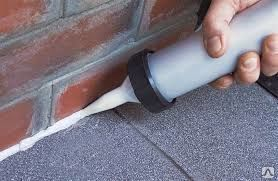

Строительные герметики и мастики, выпускаемые нашим предприятием, изготовлены на основе высококачественного сырья по новейшим технологиям. Большой популярностью пользуются производимые нашей компанией шовный герметик и шовная мастика. Каждая выпущенная партия проходит испытания на соответствие ТУ РБ. На каждую отгружаемую партию продукции выдается паспорт качества.
Наша продукция прошла испытания РУП "Стройтехнорм", Министерства здравоохранения РБ, РУП "БелНИИС", "Научно-исследовательского института пожарной безопасности и проблем чрезвычайных ситуаций" МЧС РБ, согласована с Министерством архитектуры и строительства РБ.
Мастика обладает хорошей адгезией к основным строительным материалам: бетону, металлу, кирпичу, дереву. Свойства мастики обеспечивают высокую стойкость к тепловым и усадочным деформациям, к вибрации, действию агрессивных атмосферных факторов, ультрафиолетовому излучению, что позволяет применять ее во всех климатических зонах России и стран СНГ.
Мастика поставляется в виде двух компонентов – основной пасты и отверждающей пасты.
Предназначена для герметизации стыков деревянных, металлических, полимерных, кирпичных и бетонных конструкций, а также водо-воздухозащиты ограждающих конструкций. Рекомендуется для нанесения как на вертикальную, так и на горизонтальную поверхность.
Температурный интервал эксплуатации мастики от −60°С…+70°С.
Разработана специально для монтажа теплоизоляционных плит из экструдированного пенополистирола;
Обеспечивает высокую прочность, эластичность и водостойкость клеевого соединения;
Эффективна при эксплуатации в широком диапазоне температур: от -30°C до +80°C.
Перед применением содержимое емкости перемешать миксером 3 минуты; при минусовых температурах емкости с мастикой термостатировать при комнатной температуре 8 часов. Мастику наносить на поверхность малярным инструментом, а также наливом с разравниванием специальными гребками, шпателем. Выдержать 10-30 минут, соединить склеиваемые поверхности и тщательно прижать по всей площади нанесения.
При приклеивании утеплителя к вертикальным поверхностям, дополнительно рекомендуется осуществить механическое крепление при помощи дюбелей (в 1-3 точках).
Рекомендуем работать при температуре, −10°C…+30°C.
Металлическая тара вместимостью 18; 40 и 50 кг
Герметик представляет собой смесь связующего вещества на основе водной акриловой дисперсии, наполнителей, пеногасителя, эмульгатора, пигмента и других целевых добавок.
Предназначен для герметизации стыков в деревянных, железобетонных, металлических и пластиковых конструкциях, заполнения неровностей поверхностей, швов, примыканий оконных блоков; может окрашиваться акрилатными красками.
Прогнозируемый срок службы до 10 лет.
Герметик относится к горючим веществам. В помещении, в котором проводятся работы с герметиком, запрещается курить и принимать пищу. При попадании герметика на кожу необходимо его снять ватным тампоном и промыть большим количеством воды с мылом. При попадании в глаза – промыть глаза водой и немедленно обратиться к врачу.
Перед нанесением анаэробного клея поверхность деталей очищают от загрязнений и обезжиривают бензином или толуолом и ацетоном и другими синтетическими моющими составами, не содержащими нитритов.
После обезжиривания детали сушат до полного испарения растворителя.
Наносят состав на одну из деталей равномерным слоем и собирают узел.
Рекомендуем работать при температуре, −10°C…+30°C.
Металлическая тара вместимостью 18; 40 и 50 кг
Клей представляет собой смесь эластомеров, смол и других добавок, растворённых в органических растворителях. Предназначен для приклеивания декоративно-отделочных покрытий, резины к металлу, дереву; полистирола к стеклу, бетону, кирпичу; склеивания кожевенных изделий, линолеума, тканей в машиностроении, а также в строительстве и кожгалантерейной промышленности.
Температура при проведении работ должна быть не ниже 15°С.
Расход клея – 0,35 кг на 1 м² поверхности.
Требования безопасности
При работе с клеем категорически запрещается пользоваться открытым огнём.
Предназначен для приклеивания декоративно-отделочных покрытий, резины к металлу, дереву; полистирола к стеклу, бетону, кирпичу; склеивания кожевенных изделий, линолеума, тканей в машиностроении, а также в строительстве и кожгалантерейной промышленности.
Перед началом работы клей тщательно перемешать. В случае необходимости клей может быть разбавлен этилацетатом, бензином, нефрасом С2, растворителем №646 или Р4. Температура клея должна быть доведена до 20°С. Склеиваемые поверхности очистить от пыли, загрязнений и зачистить шлифовальной шкуркой. Клей нанести кистью равномерно по всей поверхности, подлежащей склеиванию, и сушить на открытом воздухе в течение (15 – 20) мин. Затем нанести второй слой клея и сушить при этой же температуре в течение 1,5 – 2 мин. (до состояния «сухой на отлип»). Склеиваемые поверхности соединить и прижать. Выдержать в течение 24 часов.
Температура при проведении работ должна быть не ниже 15°С.
Клей транспортируют в крытых транспортных средствах всех видов в соответствии с правилами перевозки огнеопасных грузов, действующими на транспорте данного вида.
Предназначены для уничтожения насекомых в жилых и подсобных помещениях, на предприятиях общественного питания, а также для борьбы с насекомыми-вредителями плодовых деревьев, овощных культур, лесов, цветов.
Полоску ленты-ловушки расслаивают на две части, каждую из которых располагают на горизонтальных поверхностях липким слоем вверх или подвешивают в местах наибольшего скопления насекомых. Для помещения площадью 15м² рекомендуется использовать 3 полоски. Для борьбы с тараканами полоски раскладывают вдоль плинтусов непрерывной лентой, склеивая между собой полоски. В случае применения ленты для борьбы с вредителями плодовых деревьев полоски плотным касанием накладывают на зачищенные участки в виде кольца вокруг ствола клеевым слоем наружу. Для уничтожения вредителей в теплицах и на огородах полоски ленты развешивают на проволочных и нитевых струнах, натянутых в зоне возможного нахождения насекомых.
Применяются в качестве однокомпонентного клея в автомобиле-, машино-, приборо-,судостроении, радиотехнике и других областях техники, а также в строительстве.
С успехом применяются для приклейки листовых и пленочных материалов на металл и другие поверхности, часто используются для оклейки металлических фургонов и кузовов непропитывающимися материалами (линолеум, ковролин и т.п.).Преимущества использования сополимера Акрилат–45КД:
обеспечивается высокая адгезия пластифицированной ПВХ-пленки к оцинкованной и холоднокатаной стали в производстве металлопласта (конструкционного материала с повышенной коррозионной стойкостью);
отлично склеиваются различные материалы, в т.ч. алюминиевые поверхности, стекло, лавсан и др.
Анаэробная пропитка ВЛН–52 (по типу ПК–80) применяется для герметизации литьевых деталей из чугуна сплавов меди, алюминия, пропитки изделий порошковой металлyргии, а также пористых материалов (бетон, древесина и др.); для герметизации крышек и корпусов водосчетчиков в условиях производства и в быry (для хозяйственно-бытового водоснабжения) и для изготовления и реставрации ценных изделий из дерева и других пористых материалов.
© 2016 УП АльфаВланик | Design by InSiteTeam